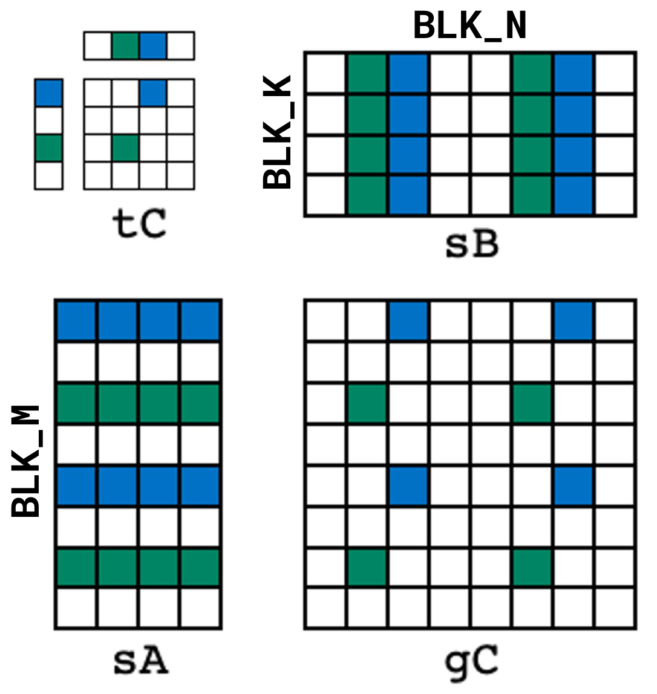
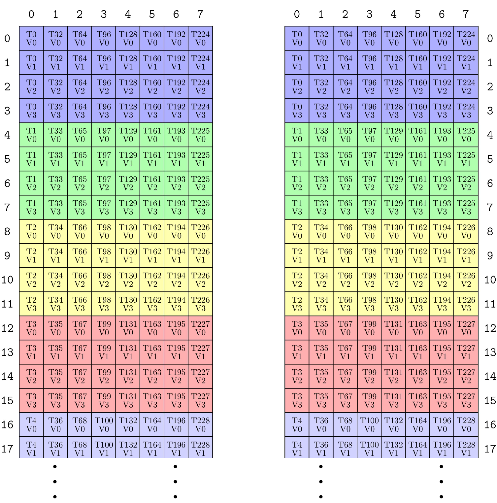
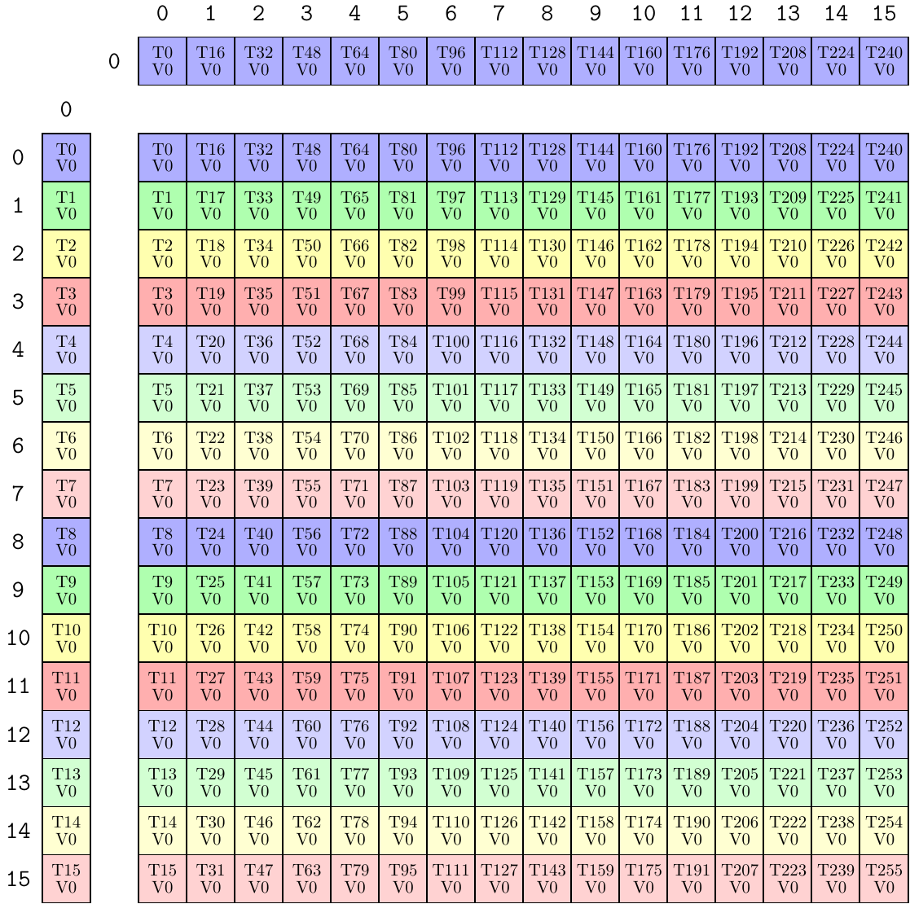

CuTe dense matrix-matrix multiply tutorial
In this section, we review these examples, which demonstrate a few self-contained, single-file dense matrix-matrix multiply implementations using only CuTe.
sgemm_1.cu
The simplest of the tutorial examples covers the basics of partitioning the global memory into tiles across the CTAs (also called threadblocks in CUDA), partitioning the data tiles across the threads of each CTA, and writing a mainloop using cute::copy and cute::gemm.
High-level interface
We’ll start with the kernel entry point gemm_device at the top of the file.
template <class ProblemShape, class CtaTiler,
class TA, class AStride, class ASmemLayout, class AThreadLayout,
class TB, class BStride, class BSmemLayout, class BThreadLayout,
class TC, class CStride, class CSmemLayout, class CThreadLayout,
class Alpha, class Beta>
__global__ static
__launch_bounds__(decltype(size(CThreadLayout{}))::value)
void
gemm_device(ProblemShape shape_MNK, CtaTiler cta_tiler,
TA const* A, AStride dA, ASmemLayout sA_layout, AThreadLayout tA,
TB const* B, BStride dB, BSmemLayout sB_layout, BThreadLayout tB,
TC * C, CStride dC, CSmemLayout , CThreadLayout tC,
Alpha alpha, Beta beta)There are many template parameters, let’s quickly review them and then go into more depth on their uses.
ProblemShape. The MxNxK problem shape of this matrix multiply.CtaTiler. A CuTe tiler concept that determines how to extract a tile of data from the problem shape.TA const* A,TB const* B,TC* C. The types and pointers to the A, B, and C data, respectively.AStride,BStride,CStride. The layout strides corresponding to theProblemShapefor each A, B, and C.ASmemLayout,BSmemLayout,CSmemLayout. The layouts, if needed, of shared memory to use for staging A-data, B-data, and C-data within each CTA.AThreadLayout,BThreadLayout,CThreadLayout. The layouts of threads to be used in partitioning each stage.Alpha alpha,Beta beta. The types and values of the scalar constants to compute GEMM:C = alpha * A * B + beta * C.
The Full Tensors: Shapes, Strides, and Data
Most GEMM interfaces list the matrices’ dimensions in the order M, N, K. CuTe also uses this convention, but packages them into a single IntTuple. In this example, they are dynamic values defined at the top of the gemm_nt and gemm_tn host functions that invoke the device kernel.
// Define shapes (dynamic)
auto M = int(m);
auto N = int(n);
auto K = int(k);
auto prob_shape = make_shape(M, N, K); // (M, N, K)Inside the kernel, the problem shape is checked against the preconditions and then used to construct each of the full matrices.
// Preconditions
CUTE_STATIC_ASSERT_V(rank(shape_MNK) == Int<3>{}); // (M, N, K)
CUTE_STATIC_ASSERT_V(congruent(select<0,2>(shape_MNK), dA)); // dA strides for shape MK
CUTE_STATIC_ASSERT_V(congruent(select<1,2>(shape_MNK), dB)); // dB strides for shape NK
CUTE_STATIC_ASSERT_V(congruent(select<0,1>(shape_MNK), dC)); // dC strides for shape MN
// Represent the full tensors
Tensor mA = make_tensor(make_gmem_ptr(A), select<0,2>(shape_MNK), dA); // (M,K)
Tensor mB = make_tensor(make_gmem_ptr(B), select<1,2>(shape_MNK), dB); // (N,K)
Tensor mC = make_tensor(make_gmem_ptr(C), select<0,1>(shape_MNK), dC); // (M,N)The appropriate modes of the Shape are selected to construct each of the tensors. The preconditions make sure that for every integer in the Shape there is a corresponding integer in the associated Stride.
Note that the comment after B says (N,K) rather than (K,N). This means that B is treated as an NxK matrix instead of a KxN matrix as is typical within BLAS and most other matrix-matrix multiplications. CuTe follows the convention that the semantics of matrix modes is (M,K) for A, (N,K) for B, and (M,N) for C, which we try to record in comments everywhere.
For each of the (M,K), (N,K), and (M,N) tensors, the gemm_nt and gemm_tn construct the strides those tensors will use. In gemm_nt the strides are defined as
// Define NT strides (mixed)
auto dA = make_stride(Int<1>{}, ldA); // (dM, dK)
auto dB = make_stride(Int<1>{}, ldB); // (dN, dK)
auto dC = make_stride(Int<1>{}, ldC); // (dM, dN)and in gemm_tn the strides are defined as
// Define TN strides (mixed)
auto dA = make_stride(ldA, Int<1>{}); // (dM, dK)
auto dB = make_stride(ldB, Int<1>{}); // (dN, dK)
auto dC = make_stride(Int<1>{}, ldC); // (dM, dN)Aside: M-major, N-major, K-major
We’ve found that the BLAS convention of using “non-transposed” (N) and “transposed” (T) flags in conjunction with the mode conventions of MxK * KxN to confuse the core issue of “what layout does this matrix use” and “in which mode does my matrix have a stride-1?”. Indeed, the answer to those questions can always be found by inspecting the CuTe Layout.
Instead of row-major or column-major (or Transposed and Not-Transposed), we have found it much more convenient to say that a matrix is “M-major” if it is stride-1 in the M-mode, “N-major” if it is stride-1 in the N-mode, or “K-major” if it is stride-1 in the K-mode. Furthermore, knowing that matrix multiply always performs a reduction in the K-mode, it is very convenient from a software perspective to always have the K-mode in the same place and adopt the mode convention MxK * NxK. Implementations will always reduce over the second mode (the K mode) of both input matrices and leads to cases where implementations can treat both input matrices the same way.
How do we translate this into the BLAS user’s experience?
| BLAS | A Majorness | A Layout | B Majorness | B Layout |
|---|---|---|---|---|
| NT | M-major | (M,K):(1,ldA) |
N-major | (N,K):(1,ldB) |
| TN | K-major | (M,K):(ldA,1) |
K-major | (N,K):(ldB,1) |
| NN | M-major | (M,K):(1,ldA) |
K-major | (N,K):(ldB,1) |
| TT | K-major | (M,K):(ldA,1) |
N-major | (N,K):(1,ldB) |
Regardless, we’ll still use the BLAS “NT” and “TN” notations for high-level descriptions of kernels when it’s appropriate.
CTA Partitioning
Now that we have the representations of the full matrices, it’s time to tile them and split up the work!
At the highest level, the work is distributed across CTAs. In principle, each CTA’s tile could come from the input tensors in many different ways. Many CuTe Tilers could be used to tile the data, but for these cases it is sufficient to simply use the shape of the desired CTA tile.
// Define CTA tile sizes (static)
auto bM = Int<128>{};
auto bN = Int<128>{};
auto bK = Int< 8>{};
auto cta_tiler = make_shape(bM, bN, bK); // (BLK_M, BLK_N, BLK_K)Once the tiler has been defined, we can use it to tile and partition the tensors across the CTAs.
// Get the appropriate blocks for this threadblock
auto cta_coord = make_coord(blockIdx.x, blockIdx.y, _); // (m,n,k)
Tensor gA = local_tile(mA, cta_tiler, cta_coord, Step<_1, X,_1>{}); // (BLK_M,BLK_K,k)
Tensor gB = local_tile(mB, cta_tiler, cta_coord, Step< X,_1,_1>{}); // (BLK_N,BLK_K,k)
Tensor gC = local_tile(mC, cta_tiler, cta_coord, Step<_1,_1, X>{}); // (BLK_M,BLK_N)First, the CTA coordinate is created. * The m-coordinate of this tile is given by blockIdx.x. * The n-coordinate of this tile is given by blockIdx.y. * The k-coordinate of this tile is unspecified – we want all of the tiles in K so the coordinate is _, the Underscore value, to keep that mode.
Then, local_tile is used to remove the modes of the tiler and coord corresponding to the Xs. That is, the Step<_1, X,_1> is just shorthand for
// Use select<0,2> to use only the M- and K-modes of the tiler and coord
Tensor gA = local_tile(mA, select<0,2>(cta_tiler), select<0,2>(cta_coord));This local_tile is simply shorthand for 1. apply the tiler via zipped_divide
// ((BLK_M,BLK_K),(m,k))
Tensor gA_mk = zipped_divide(mA, select<0,2>(cta_tiler));- apply the coord to the second mode, the “Rest” mode, to extract out the correct tiles for this CTA.
// (BLK_M,BLK_K,k)
Tensor gA = gA_mk(make_coord(_,_), select<0,2>(cta_coord));Because the projections of the tiler and coord are symmetric and the two steps (apply a tiler and then slice into the rest-mode to produce a partition) are so common, they are wrapped together into the projective local_tile interface.
For tensor A, we are left with a rank-3 tensor of shape (BLK_M,BLK_K,k). The first two modes are precisely the modes of the CTA tile and the last mode indexes over all of the tiles that will be reduced by this CTA. In the mainloop section below, this mode is iterated over via the k_tile loop.
SMEM tensors
The shared memory layouts that are used to hold the tiles of data for A and B are also passed in as the parameters ASmemLayout sA_layout and BSmemLayout sB_layout.
These are defined in gemm_nt as
// Define the smem layouts (static)
auto sA = make_layout(make_shape(bM, bK)); // (m,k) -> smem_idx; m-major
auto sB = make_layout(make_shape(bN, bK)); // (n,k) -> smem_idx; n-majorwhich produces simple M-major and N-major layouts. In gemm_tn these are
// Define the smem layouts (static)
auto sA = make_layout(make_shape(bM,bK), LayoutRight{}); // (m,k) -> smem_idx; k-major
auto sB = make_layout(make_shape(bN,bK), LayoutRight{}); // (n,k) -> smem_idx; k-majorwhich produces simple K-major layouts.
As is evident, these smem layouts can be almost anything. Inside the kernel, they are checked for only two properties: the shared memory layouts are static and they are the same top-level shape as the CtaTiler.
// Preconditions
static_assert(is_static<ASmemLayout>::value);
static_assert(is_static<BSmemLayout>::value);
static_assert(is_static<CSmemLayout>::value);
CUTE_STATIC_ASSERT_V(size<0>(ASmemLayout{}) == size<0>(cta_tiler)); // BLK_M
CUTE_STATIC_ASSERT_V(size<0>(CSmemLayout{}) == size<0>(cta_tiler)); // BLK_M
CUTE_STATIC_ASSERT_V(size<0>(BSmemLayout{}) == size<1>(cta_tiler)); // BLK_N
CUTE_STATIC_ASSERT_V(size<1>(CSmemLayout{}) == size<1>(cta_tiler)); // BLK_N
CUTE_STATIC_ASSERT_V(size<1>(ASmemLayout{}) == size<2>(cta_tiler)); // BLK_K
CUTE_STATIC_ASSERT_V(size<1>(BSmemLayout{}) == size<2>(cta_tiler)); // BLK_KUse of static layouts has a few advantages. * Static layouts let us statically allocate shared memory as shown below. * Static layouts are often more efficient and allow CuTe to dispatch to optimized implementations. * Static layouts makes it easier to prove correctness of the algorithm and provide checks like the above – the smem layout sizes are the same as the CTA tile sizes.
As stated, the shared memory layouts can be anything that satisfy those conditions. Optimizing kernels like these is often performed by finding a good shared memory layout that provides good access patterns for both the writes to and the reads from shared memory. This includes the ability to vectorize reads and writes as well as avoid shared memory bank conflicts.
With the static smem layouts, the gemm_device kernel can allocate the required shared memory and create the smem Tensors.
// Shared memory buffers
__shared__ TA smemA[cosize_v<ASmemLayout>];
__shared__ TB smemB[cosize_v<BSmemLayout>];
Tensor sA = make_tensor(make_smem_ptr(smemA), sA_layout); // (BLK_M,BLK_K)
Tensor sB = make_tensor(make_smem_ptr(smemB), sB_layout); // (BLK_N,BLK_K)Note how the shared memory allocation depends only on the data type and the layout. What’s a cosize? Because a Layout is a function, we can speak of its domain and codomain. The size of a layout is the size of its domain and the cosize of a layout is the size of its codomain. If we want to allocate an array for which all the offsets produced by a layout are valid, then we can use the cosize of the layout as the length of the array (in units of elements).
Copy partitioning
The kernel now has tiles of global memory by applying the CtaTiler to the full tensors and it also has tiles of shared memory by allocating appropriately. We now want to create an efficient way to copy one tile of global memory to our tile of shared memory. A trivial way to do this would be to use a single thread and copy each element.
if (thread0()) {
Tensor gA0 = gA(_,_,0); // (BLK_M,BLK_K), the 0th tile
for (int i = 0; i < size(sA); ++i) {
sA(i) = gA0(i);
}
}This would work, but we have lots of threads to use inside this CTA, so let’s use them!
If we partition the two tiles of data across the threads in the CTA, then each thread can copy its own subtensor of data. There are lots of ways this partitioning could occur, however.
The gemm_nt function defines two layouts of threads as
// Define thread layouts (static)
auto tA = make_layout(make_shape(Int<32>{},Int<8>{})); // (m,k) -> thr_idx
auto tB = make_layout(make_shape(Int<32>{},Int<8>{})); // (n,k) -> thr_idxand the gemm_tn functions defines two layouts of threads as
// Define thread layouts (static)
auto tA = make_layout(make_shape(Int<32>{},Int<8>{}), LayoutRight{}); // (m,k) -> thr_idx; k-major
auto tB = make_layout(make_shape(Int<32>{},Int<8>{}), LayoutRight{}); // (n,k) -> thr_idx; k-majorBoth cases happen to use 32x8 threads, which will be used to partition a 128x8 tile of gmem and smem data into a 4x1 subtensor for each thread. The only difference here is that gemm_nt uses M-major and N-major threads to match the order of data in global memory and gemm_tn uses K-major threads to match the order of data in global memory.
Again, the conditions on the thread layouts are checked inside the kernel.
static_assert(is_static<AThreadLayout>::value);
static_assert(is_static<BThreadLayout>::value);
CUTE_STATIC_ASSERT_V(size(tA) == size(tB)); // NumThreads
CUTE_STATIC_ASSERT_V(size<0>(cta_tiler) % size<0>(tA) == Int<0>{}); // BLK_M / THR_M
CUTE_STATIC_ASSERT_V(size<2>(cta_tiler) % size<1>(tA) == Int<0>{}); // BLK_K / THR_K
CUTE_STATIC_ASSERT_V(size<1>(cta_tiler) % size<0>(tB) == Int<0>{}); // BLK_N / THR_N
CUTE_STATIC_ASSERT_V(size<2>(cta_tiler) % size<1>(tB) == Int<0>{}); // BLK_K / THR_KThese thread layouts are then used to partition the global memory tensors data and shared memory tensors
Tensor tAgA = local_partition(gA, tA, threadIdx.x); // (THR_M,THR_K,k)
Tensor tAsA = local_partition(sA, tA, threadIdx.x); // (THR_M,THR_K)
Tensor tBgB = local_partition(gB, tB, threadIdx.x); // (THR_N,THR_K,k)
Tensor tBsB = local_partition(sB, tB, threadIdx.x); // (THR_N,THR_K)
CUTE_STATIC_ASSERT_V(size<0>(tAgA) == size<0>(tAsA)); // THR_M
CUTE_STATIC_ASSERT_V(size<1>(tAgA) == size<1>(tAsA)); // THR_K
CUTE_STATIC_ASSERT_V(size<0>(tBgB) == size<0>(tBsB)); // THR_N
CUTE_STATIC_ASSERT_V(size<1>(tBgB) == size<1>(tBsB)); // THR_Kwhere local_partition is a lot like local_tile, except the coordinate slices into the tile-mode (the first mode) of the zipped_divide rather than the rest-mode (the second mode). That is, each thread gets one element of data assigned to it per thread tile and that thread tile is repeated to cover the entire data tile.
The naming convention tAsA is pretty typical across CuTe and CUTLASS. This is read as “Partitioning pattern tA applied to tensor sA”. In the next section, we’ll see a different partitioner applied to sA to produce tCsA. By applying the same partitioning pattern, tA, to tensors sA and gA, we preserve the logical consistency of those tensors (checked by the assertions above) where logical elements between the two tensors correspond despite any differences in their data layouts. When used in cute::copy, for example, this naming convention let’s us lexically verify that the two tensors are using the same partitioning pattern.
With the data partitioned across the threads, every thread can now participate in the copy by writing
copy(tAgA(_,_,0), tAsA);because every thread owns a different subtensor of the tile that will be copied.
Math partitioning
The kernel now has tiles of shared memory copied in from global memory. We now want to create an efficient way to compute and accumulate the matrix product on that tile of shared memory. A trivial way to do this would be to use a single thread and compute directly.
if (thread0()) {
for (int m = 0; m < size<0>(gC); ++m) {
for (int n = 0; n < size<1>(gC); ++n) {
for (int k = 0; k < size<1>(sA); ++k) {
gC(m,n) += sA(m,k) * sB(n,k);
}
}
}
}This would work, but we have lots of threads to use inside this CTA, so let’s use them!
If we partition the output tile gC across the threads in the CTA, then each thread can compute its own subtensor. There are lots of ways this partitioning could occur, however.
The gemm_nt and gemm_tn functions define one more layout of threads:
// Define thread layouts (static)
auto tC = make_layout(make_shape(Int<16>{}, Int<16>{})); // (m,n) -> thr_idx; m-majorThis is a m-major 16x16 layout of threads which will be used to partition a 128x128 tile of C-data, resulting in each thread computing its own 8x8 subtensor of gC.
Again, the conditions on the thread layouts are checked inside the kernel.
static_assert(is_static<CThreadLayout>::value);
CUTE_STATIC_ASSERT_V(size(tC) == size(tA)); // NumThreads
CUTE_STATIC_ASSERT_V(size<0>(cta_tiler) % size<0>(tC) == Int<0>{}); // BLK_M / THR_M
CUTE_STATIC_ASSERT_V(size<1>(cta_tiler) % size<1>(tC) == Int<0>{}); // BLK_N / THR_NThese thread layouts are then used to partition the tiles of data in global memory and shared memory
// Partition sA (M,K) by the rows of tC
Tensor tCsA = local_partition(sA, tC, threadIdx.x, Step<_1, X>{}); // (THR_M,BLK_K)
// Partition sB (N,K) by the cols of tC
Tensor tCsB = local_partition(sB, tC, threadIdx.x, Step< X,_1>{}); // (THR_N,BLK_K)
// Partition gC (M,N) by the tile of tC
Tensor tCgC = local_partition(gC, tC, threadIdx.x, Step<_1,_1>{}); // (THR_M,THR_N)
// Allocate the accumulators -- same shape/layout as the partitioned data
Tensor tCrC = make_tensor_like(tCgC); // (THR_M,THR_N)
CUTE_STATIC_ASSERT_V(size<0>(tCrC) == size<0>(tCgC)); // THR_M
CUTE_STATIC_ASSERT_V(size<0>(tCrC) == size<0>(tCsA)); // THR_M
CUTE_STATIC_ASSERT_V(size<1>(tCrC) == size<1>(tCgC)); // THR_N
CUTE_STATIC_ASSERT_V(size<1>(tCrC) == size<0>(tCsB)); // THR_N
CUTE_STATIC_ASSERT_V(size<1>(tCsA) == size<1>(tCsB)); // BLK_Kwhere we’ve used the same projection-style interface to avoid applying the N-mode of tC to the (BLK_M,BLK_K) shape of sA and avoid applying the M-mode of tC to the (BLK_N,BLK_K) shape of sB.

This diagram shows atC layout, highlights two threads in green and blue, shows the projections of the tC layout, and finally highlights the subtensors within sA, sB, and gC that tCsA, tCsB, and tCgC represent.
With the data partitioned across the threads, every thread can now participate in the compute step by writing
gemm(tCsA, tCsB, tCrC);because every thread owns different subtensors of the data to be computed.
Mainloop
The mainloop iterates over tiles of global memory, reads those tiles into shared memory, and then performs the matrix-multiply and accumulates into the accumulators.
// TUTORIAL: Example of a very simple compute mainloop
// copy(.) operates on the global and shared memory via the tA|tB partitioning
// gemm(.) operates on the shared and register memory via the tC partitioning
auto K_TILE_MAX = size<2>(tAgA);
for (int k_tile = 0; k_tile < K_TILE_MAX; ++k_tile)
{
// Copy gmem to smem with tA|tB thread-partitioned tensors
copy(tAgA(_,_,k_tile), tAsA); // A (THR_M,THR_K) -> (THR_M,THR_K)
copy(tBgB(_,_,k_tile), tBsB); // B (THR_N,THR_K) -> (THR_N,THR_K)
cp_async_fence(); // Label the end of (potential) cp.async instructions
cp_async_wait<0>(); // Sync on all (potential) cp.async instructions
__syncthreads(); // Wait for all threads to write to smem
// Compute gemm on tC thread-partitioned smem
gemm(tCsA, tCsB, tCrC); // (THR_M,THR_N) += (THR_M,BLK_K) * (THR_N,BLK_K)
__syncthreads(); // Wait for all threads to read from smem
}We can see that k_tile iterates over each tile of data, the cute::copy is performed for the current k_tile using the tA and tB thread-partitioned tensors, and the cute::gemm is computed for that current k_tile using the tC thread-partitioned tensors. Synchronization is provided so that this kernel works on any architecture.
sgemm_2.cu
An example that uses more complex TiledMMA and TiledCopy to perform partitioning in place of the tA, tB, and tC thread layouts. With this example, we try to emphasize that the shared memory layouts, the partitioning patterns, and the PTX instruction to use in each stage can be specified independently.
TiledCopy
First, we can replace the tA partitioning and tB partitioning with TiledCopy partitioning, which provides for more complex partitioning patterns and checked dispatch to specific copy instructions.
As a first example, lets look at the TiledCopy that gemm_nt generates.
TiledCopy copyA = make_tiled_copy(Copy_Atom<UniversalCopy<uint128_t>, TA>{}, // Atom: Copy TAs as if they were uint128_t
Layout<Shape<_32,_8>>{}, // Thr layout 32x8 m-major
Layout<Shape< _4,_1>>{}); // Val layout 4x1 m-major
print_latex(copyA);The easiest way to see what this TiledCopy does is to look at the partition pattern in LaTeX.

On the left is the source-tensor partitioning and on the right is the destination-tensor partitioning. The partition patterns are the same for this case, but there exist PTX instructions which require different patterns in the source and destination. The diagram shows that each thread reads 4x1TA elements and there are 32x8 threads. The UniversalCopy<uint128_t> forces the instruction to use a 128-bit copy instruction. If the partition (of sA or gA in this case) does not result in 4 TA elements that cannot be vectorized to a 128-bit load/store, then CuTe will statically fail with an error message to that effect.
To use the TiledCopy, the kernel writes
ThrCopy thr_copy_a = copy_a.get_slice(threadIdx.x);
Tensor tAgA = thr_copy_a.partition_S(gA); // (CPY,CPY_M,CPY_K,k)
Tensor tAsA = thr_copy_a.partition_D(sA); // (CPY,CPY_M,CPY_K)
// Allocate registers same shape/layout as partitioned data
Tensor tArA = make_fragment_like(tAsA); // (CPY,CPY_M,CPY_K)which applies the source-tensor partitioning to gA via partition_S and applies the destination-tensor partitioning to sA via partition_D. The first mode, CPY, of the result tensors hold all of the elements that a single instruction will consume. In this case, that mode should have size-4 since there are four TA=float elements in a single 128-bit uint128_t.
Once the partition has been performed, we can execute the copy on the thread-partitioned tensors using the provided instruction in copy_a.
cute::copy(copy_a, tAgA, tArA);TiledMMA
Next, we can replace the tC partitioning with TiledMMA partitioning, which provides for more complex partitioning patterns and checked dispatch to specific MMA instructions.
As a first example, lets look at the TiledMMA that gemm_nt generates.
TiledMMA mmaC = make_tiled_mma(UniversalFMA<TC,TA,TB>{},
Layout<Shape<_16,_16,_1>>{}); // 16x16x1 UniversalFMA
print_latex(mmaC);The easiest way to see what this TiledMMA does is to look at the partition pattern in LaTeX.

On the left is the A-tensor partitioning, on the top is the B-tensor partitioning, and in the middle is the C-tensor partitioning.Because theUniversalFMA is a 1x1x1 MMA instruction, a 16x16x1 tiling of them results in a 16x16x1 TiledMMA. Other MMA instructions will have different threads involved and have different instruction sizes. In this case, all threads will read a single element from A, B, and C each.
To use the TiledMMA, the kernel writes
ThrMMA thr_mma = mma.get_slice(threadIdx.x);
Tensor tCsA = thr_mma.partition_A(sA); // (MMA,MMA_M,MMA_K)
Tensor tCsB = thr_mma.partition_B(sB); // (MMA,MMA_N,MMA_K)
Tensor tCgC = thr_mma.partition_C(gC); // (MMA,MMA_M,MMA_N)
// Allocate the accumulators -- same size as the projected data
Tensor tCrC = thr_mma.make_fragment_C(tCgC); // (MMA,MMA_M,MMA_N)which applies the A-tensor partitioning to sA via partition_A, applies the B-tensor partitioning to sB via partition_B, and applies the C-tensor partitioning to gC via partition_C. The first mode, MMA, of the result tensors hold all of the elements that a single instruction will consume. In this case, that mode should have size-1 since UniversalFMA is a 1x1x1 MMA, but in general the size of the first mode can vary and not even be the same across tCsA, tCsB, and tCgC depending on the MMA.
Once the partition has been performed, we can execute the gemm on the thread-partitioned tensors using the provided instruction in mma.
cute::gemm(mma, tCsA, tCsB, tCrC);Other changes
In this version, we have also updated the shared memory layouts for gemm_tn from K-major to
// Define the smem layouts (static)
auto sA = make_layout(make_shape ( bM, bK),
make_stride(Int<1>{}, bM+Int<1>{})); // (m,k) -> smem_idx; padded m-major
auto sB = make_layout(make_shape ( bN, bK),
make_stride(Int<1>{}, bN+Int<1>{})); // (n,k) -> smem_idx; padded n-majorwhich produces M-major and N-major layouts, but they are padded to avoid shared memory bank conflicts. This simply improves the access pattern to and from shared memory and no other changes in the kernel are required.
sgemm_sm70.cu
An example that uses an optimized mainloop for Volta SM70 architectures that pipelines shared memory and register memory.
sgemm_sm80.cu
An example that uses an optimized mainloop for Ampere SM80 architectures that explicitly pipelines shared memory using asynchronous reads from global memory.
Next steps
All of the above examples assume that the CTA tile size divides the problem size so that global memory loads do no need to be predicated. The predication section of the tutorial explains what to do if a matrix tiling doesn’t perfectly divide the matrix.
GETT as GEMM
“GETT” here stands for “general(ized) tensor times tensor,” a tensor contraction.
CuTe permits matrices to have nested Layouts. This means that we can fold a Tensor into a “matrix” by grouping modes according to their categories.
As a result, we can implement GETT by using our existing GEMM implementation. Included below is a launcher like gemm_nt that uses the same device kernel contained in sgemm_1.cu to compute a GETT with two m-modes.
// Setup params for a GETT with two m-modes.
// The A and C tensors are assumed to be m0-major.
// Calls sgemm_1.cu's gemm_device<<<>>> without modification.
template <class TA, class TB, class TC,
class Alpha, class Beta>
void
gett(int m0, int m1, int n, int k,
Alpha alpha,
TA const* A, int ldAm1, int ldAk, // m0-major
TB const* B, int ldBk,
Beta beta,
TC * C, int ldCm1, int ldCn, // m0-major
cudaStream_t stream = 0)
{
using namespace cute;
// Define shapes (dynamic)
auto M = make_shape(m0, m1); // (m0,m1)-multimode M
auto N = int(n);
auto K = int(k);
auto prob_shape = make_shape(M, N, K); // (M, N, K)
// Define NT strides (mixed)
auto dA = make_stride(make_stride(Int<1>{}, ldAm1), ldAk); // (dM, dK)
auto dB = make_stride(Int<1>{}, ldB); // (dN, dK)
auto dC = make_stride(make_stride(Int<1>{}, ldCm1), ldCn); // (dM, dN)
// Define CTA tile sizes (static)
auto bM = Shape<_64, _2>{}; // Take _64 elements from m0 and _2 elements from m1
auto bN = Int<128>{};
auto bK = Int< 8>{};
auto cta_tiler = make_shape(bM, bN, bK); // (BLK_M, BLK_N, BLK_K)
// Define the smem layouts (static)
auto sA = make_layout(make_shape(bM, bK)); // (m,k) -> smem_idx; m-major
auto sB = make_layout(make_shape(bN, bK)); // (n,k) -> smem_idx; n-major
auto sC = make_layout(make_shape(bM, bN)); // (m,n) -> smem_idx; m-major
// Define the thread layouts (static)
auto tA = make_layout(make_shape(Int<32>{}, Int< 8>{})); // (m,k) -> thr_idx
auto tB = make_layout(make_shape(Int<32>{}, Int< 8>{})); // (n,k) -> thr_idx
auto tC = make_layout(make_shape(Int<16>{}, Int<16>{})); // (m,n) -> thr_idx
dim3 dimBlock(size(tC));
dim3 dimGrid(size(ceil_div(M, bM)),
size(ceil_div(N, bN)));
gemm_device<<<dimGrid, dimBlock, 0, stream>>>
(prob_shape, cta_tiler,
A, dA, sA, tA,
B, dB, sB, tB,
C, dC, sC, tC,
alpha, beta);
}Note that the only changes are the definition of shape M, the definition of strides dA and dC, and the definition of the CTA Tiler bM. The above uses a multimodel problem shape M = (m0,m1) and a multimodal CTA Tiler bM = <_64,_2> to change which portion of the global memory tensors A and C each CTA will be responsible for computing.
Similar examples can be found for CUTLASS 3.x kernels that are based on CuTe, such as this Hopper GETT example.
Copyright
Copyright (c) 2017 - 2025 NVIDIA CORPORATION & AFFILIATES. All rights reserved. SPDX-License-Identifier: BSD-3-Clause
Redistribution and use in source and binary forms, with or without
modification, are permitted provided that the following conditions are met:
1. Redistributions of source code must retain the above copyright notice, this
list of conditions and the following disclaimer.
2. Redistributions in binary form must reproduce the above copyright notice,
this list of conditions and the following disclaimer in the documentation
and/or other materials provided with the distribution.
3. Neither the name of the copyright holder nor the names of its
contributors may be used to endorse or promote products derived from
this software without specific prior written permission.
THIS SOFTWARE IS PROVIDED BY THE COPYRIGHT HOLDERS AND CONTRIBUTORS "AS IS"
AND ANY EXPRESS OR IMPLIED WARRANTIES, INCLUDING, BUT NOT LIMITED TO, THE
IMPLIED WARRANTIES OF MERCHANTABILITY AND FITNESS FOR A PARTICULAR PURPOSE ARE
DISCLAIMED. IN NO EVENT SHALL THE COPYRIGHT HOLDER OR CONTRIBUTORS BE LIABLE
FOR ANY DIRECT, INDIRECT, INCIDENTAL, SPECIAL, EXEMPLARY, OR CONSEQUENTIAL
DAMAGES (INCLUDING, BUT NOT LIMITED TO, PROCUREMENT OF SUBSTITUTE GOODS OR
SERVICES; LOSS OF USE, DATA, OR PROFITS; OR BUSINESS INTERRUPTION) HOWEVER
CAUSED AND ON ANY THEORY OF LIABILITY, WHETHER IN CONTRACT, STRICT LIABILITY,
OR TORT (INCLUDING NEGLIGENCE OR OTHERWISE) ARISING IN ANY WAY OUT OF THE USE
OF THIS SOFTWARE, EVEN IF ADVISED OF THE POSSIBILITY OF SUCH DAMAGE.